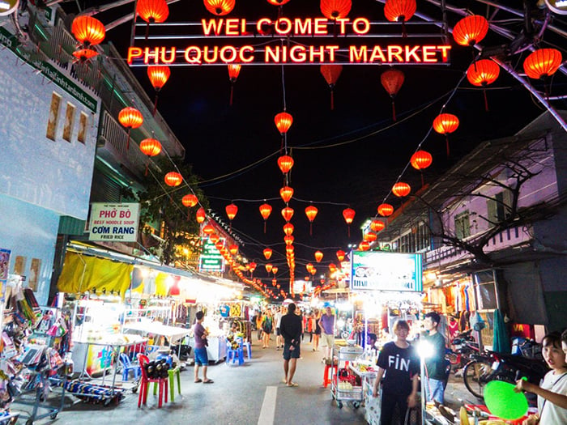
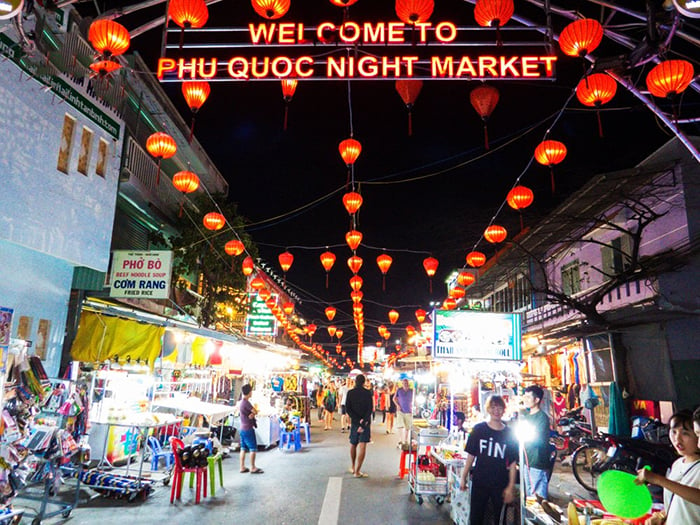

1.Bãi Sao
Bãi Sao là một trong những bãi biển đẹp nhất Phú Quốc với bờ cát trắng mịn, nước biển trong xanh và khung cảnh yên bình. Đây là địa điểm lý tưởng để nghỉ dưỡng, tắm biển và chụp ảnh.


2.VinWonders Phú Quốc
VinWonders Phú Quốc là khu vui chơi giải trí hiện đại với nhiều trò chơi hấp dẫn, công viên nước và các khu giải trí trong nhà. Nơi đây phù hợp cho mọi lứa tuổi, đặc biệt là gia đình và nhóm bạn.


Khi lên lịch trình VinWonders Phú Quốc, du khách chắc chắn sẽ cảm thấy tiếc nuối nếu không thêm vào kế hoạch của mình những show diễn hấp dẫn và đặc sắc. Đừng bỏ lỡ những show diễn Phú Quốc đầy sáng tạo, giàu văn hoá và nghệ thuật dưới đây nhé:
Once Show sẽ đưa khán giả bước vào một chuyến phiêu lưu đầy màu sắc nơi miền cổ tích, với giọng đọc truyền cảm của người dẫn chuyện. Du khách có thể lắng nghe câu chuyện kỳ diệu qua những thanh âm đặc biệt dưới đây:
Để hình dung rõ hơn về show diễn này, du khách có thể xem video dưới đây nhằm hiểu rõ hơn nội dung và không khí của chương trình.
Once Show sẽ đưa bạn trải qua những cung bậc cảm xúc khác nhau, từ hồi hộp đến thích thú. Du khách sẽ được đồng hành cùng Người anh hùng phiêu lưu qua những vùng đất của trí tưởng tượng, ngắm nhìn những khung cảnh thần tiên và chiến đấu với mụ Phù thủy gian ác, viết lên cái kết khải hoàn của cuốn sách cố tích từ ngàn xưa.
Ngoài những show diễn đặc sắc tại VinWonders, du khách còn có thể cân nhắc trải nghiệm các chương trình biểu diễn ánh sáng ấn tượng khác như Nhạc nước ban ngày tại VinWonders Phú Quốc hay show diễn Phú Quốc tại Grand World Phú Quốc – Sắc màu Venice Phú Quốc,…
3.Nhà tù Phú Quốc
Nhà tù Phú Quốc là di tích lịch sử quan trọng, ghi dấu những năm tháng đấu tranh gian khổ của dân tộc Việt Nam. Đây là địa điểm mang ý nghĩa giáo dục sâu sắc, giúp du khách hiểu hơn về lịch sử và lòng yêu nước.
4.Thị trấn Hoàng Hôn Phú Quốc
Thị trấn Hoàng Hôn Phú Quốc gây ấn tượng với kiến trúc độc đáo mang phong cách châu Âu và khung cảnh hoàng hôn rực rỡ bên bờ biển. Đây là địa điểm tham quan, check-in và ngắm cảnh được nhiều du khách yêu thích.
5.Cáp treo Hòn Thơm
Cáp treo Hòn Thơm là tuyến cáp treo vượt biển dài nhất thế giới, nối liền đảo Phú Quốc với Hòn Thơm. Du khách có thể ngắm nhìn toàn cảnh biển đảo tuyệt đẹp từ trên cao.

6.Chợ đêm Phú Quốc
Chợ đêm Phú Quốc là nơi tập trung nhiều gian hàng ẩm thực, quà lưu niệm và đặc sản địa phương. Đây là địa điểm lý tưởng để thưởng thức ẩm thực và trải nghiệm không khí nhộn nhịp về đêm của đảo ngọc.
 
